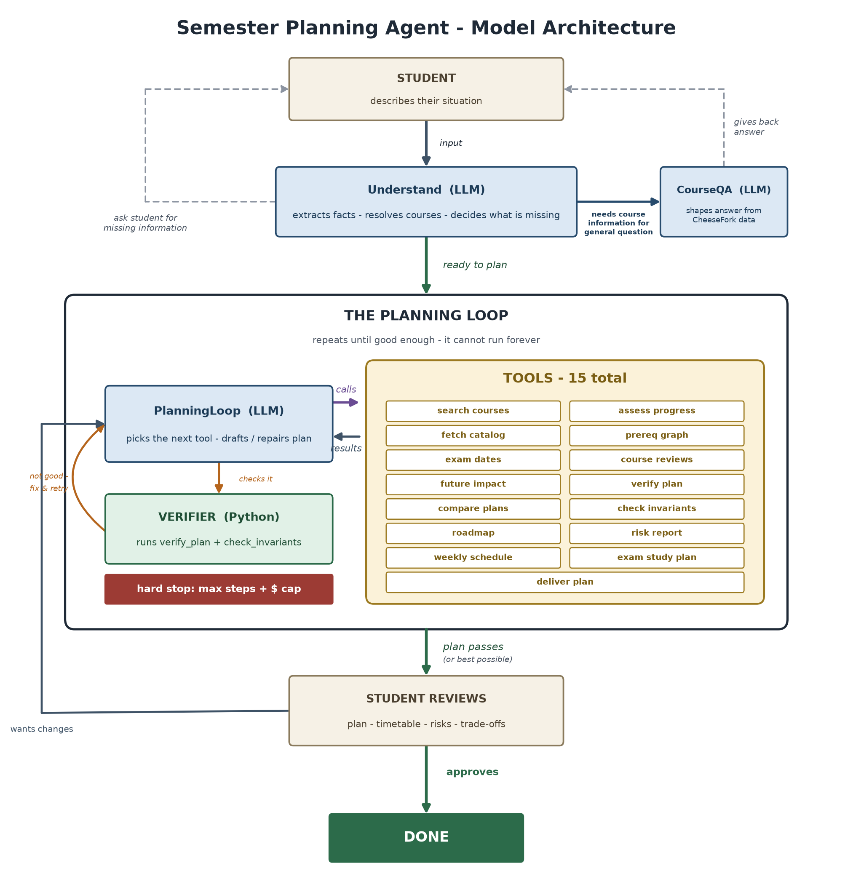

Project report
Live demo: https://technion-semester-palnner-agent.vercel.app
APEX is a Technion semester-planning agent. The student describes their situation in natural language, and the system builds a semester plan with courses, timetable, exams, risks, and explanations.
The project has two parts. The offline part is a data pipeline that prepares reliable course data. The online part is an agent that chooses tools, checks plans, repairs them, and answers the student.
The default runtime is a bounded ReAct-style loop. The model does not produce a plan in one shot. It receives a set of tools, chooses which tool to call, reads the tool result, and decides the next step.
| Module | Role |
|---|---|
Understand | Extracts structured student state from the conversation. |
PlanningLoop | Chooses tools, drafts plans, verifies plans, and repairs when needed. |
CourseQA | Answers focused course questions without running a full planner. |

The agent has exactly 15 model-callable tools. Three diagnostics are also injected automatically every planning turn to reduce cost and avoid repeated calls: progress assessment, catalog context, and prerequisite graph context.
| Tool area | Examples |
|---|---|
| Course search and catalog | search_courses, fetch_catalog, query_prereq_graph |
| Reviews and grades | summarize_cheesefork, grade-improvement analysis from technion-histograms |
| Plan checks | verify_plan, check_invariants, compare_plans |
| Schedule and exams | weekly_schedule_analyzer, fetch_exam_dates, exam_study_planner |
| Progress and risk | assess_progress, simulate_future_impact, roadmap_to_graduation, risk_report |
| Final answer | deliver_plan |
| Source | Used for |
|---|---|
| Technion course API | Catalog, requirements, prerequisites, schedules, sections, and exam dates. |
| Official track diagrams | Correct semester placement for mandatory courses. |
| CheeseFork | Student reviews, difficulty, satisfaction, and load. |
| technion-histograms | Historical course averages for grade-improvement reasoning. |
| Student input | Passed courses, failed courses, grades, and transcript PDF. |
| Supabase | Optional session persistence. |
The planner currently gives the model a compact but information-rich planning context for the current semester. This makes the agent strong at comparing courses, workload, reviews, and exam spacing in one pass, but it also makes the planning prompt longer than a minimal chat prompt.
The current design keeps core planning facts in structured tools because prerequisites, credits, section times, and exam dates need exact checks. A future version could add retrieval for policy documents and administrative guidance, while keeping scheduling and degree-rule validation deterministic.
| Endpoint | Purpose |
|---|---|
GET /api/team_info | Returns the required team metadata for the assignment. |
GET /api/agent_info | Returns description, purpose, prompt template, examples, and steps. |
GET /api/model_architecture | Returns the architecture diagram as PNG. |
POST /api/execute | Runs a one-shot prompt and returns status, error, response, and steps. |